Investigating Determinants of Social Communication Deficits in ASD
Committee Meeting Presentation
Jenny Nguyen


Introduction
What is autism spectrum disorder (ASD)?
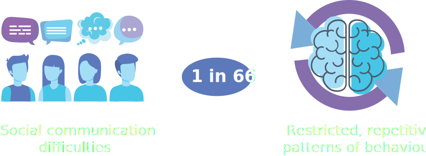-
American Psychiatric Association. Diagnostic and Statistical Manual of Mental Disorders (DSM-5®).
-
Ofner, M. et al. Autism spectrum disorder among children and youth in Canada 2018. (Public Health Agency of Canada Ottawa, ON, 2018).
Why is understanding social communication important?
Social Communication Difficulties
There are three main ways in which social communication difficulties manifest in ASD. 1
1. Difficulty with social-emotional reciprocity
2. Atypical nonverbal communication
3. Difficulty developing, maintaining and understanding relationships
-
American Psychiatric Association. Diagnostic and Statistical Manual of Mental Disorders (DSM-5®).
-
Howlin, P. & Magiati, I. Autism spectrum disorder: outcomes in adulthood. Curr. Opin. Psychiatry 30, 69–76 (2017).
-
Hong, J., Bishop-Fitzpatrick, L., Smith, L. E., Greenberg, J.S. & Mailick, M. R. Factors Associated with Subjective Quality of Life of Adults with Autism Spectrum Disorder: Self-Report Versus Maternal Reports. J. Autism Dev. Disord. 46, 1368–1378 (2016).
-
Spence, S. H., Donovan, C. & Brechman-Toussaint, M. Social skills, social outcomes, and cognitive features of childhood social phobia. J. Abnorm. Psychol. 108, 211–221 (1999).
The determinants of Social Communication have been studied independently
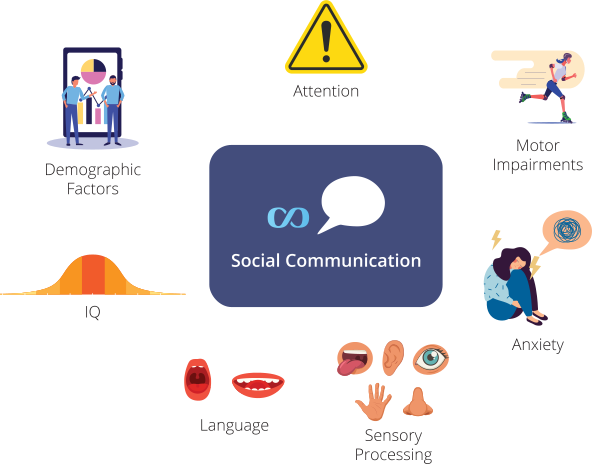Gaps in the Literature
- The predictors of social communication are studied independently of each other
- No consideration for the interplay between these factors
- Given that these factors are often highly correlated, there is a gap in understanding of how the constellations of these variables together may influence social communication abilities in ASD.
Research Question
What is the differential contribution of demographics (sex, race/ethnicity, and socioeconomic status), IQ, sensory profiles, attention, anxiety, and language on social communication abilities?
Significance of this Work

A better understanding of the determinants of social communication difficulties could improve interventions
- Individuals with ASD experience varying levels of social communication difficulties (i.e., different level of severity and difficulty with different sociocommunicative skills).
- Therefore, different factors could be driving the heterogeneity in social communication difficulties within ASD
- Understanding which factors impact social communication and specifically which skills, could help us develop tailored interventions for children with ASD.
Tailoring interventions could potential improve outcomes for individuals with ASD
Background
Determinants of social communication
Demographic Factors
Sex & Gender
Socioeconomic Status (SES)
- Literature supports that ↓ SES = ↑ social communication difficulties
- In particular, lower household income and fewer number of years of maternal education a predictive of lower social and communication scores
Race/Ethnicity
- Comparisons are typically made between white and non-white groups.
- Non-white children with ASD tend to score significantly on social and communication measures.
-
Sedgewick, F., Hill, V., Yates, R., Pickering, L. & Pellicano, E. Gender differences in the social motivation and friendship experiences of autistic and non-autistic adolescents. J. AUTISM Dev. Disord. 46, 1297–1306 (2016).
-
Cook, A., Ogden, J. & Winstone, N. Friendship motivations, challenges and the role of masking for girls with autism in contrasting school settings. Eur. J. Spec. Needs Educ. 33, 302–315 (2018).
-
Dean, M., Harwood, R. & Kasari, C. The art of camouflage: Gender differences in the social behaviors of girls and boys with autism spectrum disorder. AUTISM 21, 678–689 (2017).
-
Constantino, J. N., Zhang, Y., Frazier, T., Abbacchi, A. M. & Law, P. Sibling recurrence and the genetic epidemiology of autism. Am. J. Psychiatry 167, 1349–1356 (2010).
-
Hartley, S. L. & Sikora, D. M. Sex Differences in Autism Spectrum Disorder: An Examination of Developmental Functioning, Autistic Symptoms, and Coexisting Behavior Problems in Toddlers. J. Autism Dev. Disord. 39, 1715–1722 (2009)
-
Evans, S. C., Boan, A. D., Bradley, C. & Carpenter, L. A. Sex/Gender Differences in Screening for Autism Spectrum Disorder: Implications for Evidence-Based Assessment. J. Clin. Child Adolesc. Psychol. 48, 840–854 (2019).
IQ
- Many of studies looking at the relationship between IQ and social communication, do not include individuals with co-occurring intellectual disability (full-scale IQ < 70)
- In individuals with ASD with normal-to-high cognitive abilities, children with lower verbal IQ had more communication and social difficulties.
- Some findings suggest the the IQ gap (discrepancy between verbal and performance IQ) has predictive value.
Sensory Processing
- 45-95% of individuals with ASD have significantly higher sensory processing difficulties than the norm.
- In both ASD and general populations, studies have also shown that sensory processing difficulties are highly correlated with a greater number of autistic traits
- In Sibs-ASD, sensory issues in infancy are predictive of severity of social symptoms in early childhood. Findings suggest that there may be a cascade effect — ↑ sensory seeking → ↓ social orienting → ↑ social difficulties
Attention
- The co-occurrence rate of ASD and attention deficit hyperactivity disorder (ADHD) ranges from 14 to 78%
- Challenges with social functioning is common in ADHD.
- The combination of hyperactivity, impulsivity, and inattention impacts the ability to fine-tune social behaviours, which, in turn leads, to social difficulties
- In ASD, the presence of ADHD-traits results in significantly greater social and communication difficulties.
- Attention may impact ability to recognize facial emotion which may impact social communication outcomes.
- Early joint attention is also a well-documented predictor of social communication in early childhood.
Anxiety
- The prevalence of a co-occurring anxiety diagnosis in ASD ranges from 37 to 42%
- The association between anxiety and social communication is well established.
- Children with ASD and children with anxiety disorders (but no ASD) have statistically indistinguishable scores of social responsibility
- A study comparing an ASD-only with an ASD-Anxiety group shows that anxiety may worsen socio communicative difficulties in ASD.
- Social motivation, in particular, is impacted by anxiety. In children and young adults with ASD, anxiety was found to be associated with lower social motivation
Motor Impairments
- The prevalence of motor impairments (e.g., atypical motor coordination, posture issues, and difficulties with fine and gross motor movements) in individuals with ASD ranges from 51 to 79%
- In infants at risk of developing ASD (Sibs-ASD), early motor delays predicted a future social communication delay.
- There is evidence that physical activities, specifically interventions that target motor skill impairments, may improve social communication outcomes
Language
- Difficulties in social and language development are correlated characteristics of ASD
- A temporal relationship between the two has been established: early childhood language skills are predictive of future adult social functioning
- There is research to support that language training in preschool children impacts the development of Theory of Mind (ToM) skills, which is fundamental for social functioning
Path Model
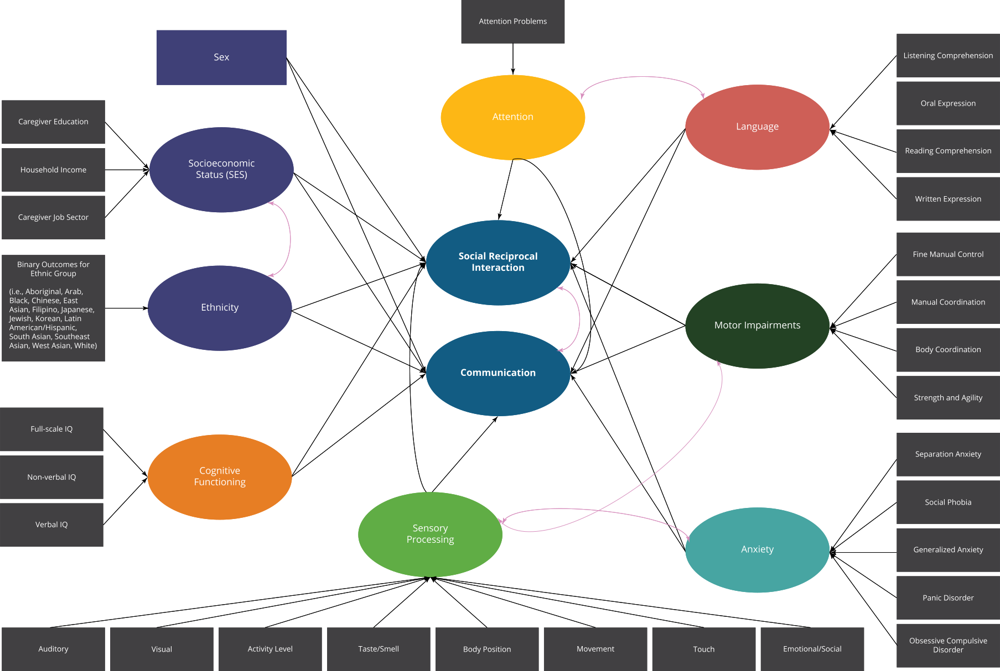Methods
Sample
We will use data from the Province of Ontario Neurodevelopmental Disorders (POND) network, a multi-centre research network that studies neurodevelopmental disorders.
There are five sites: Hospital for Sick Children (Toronto; 88), Holland Bloorview Kids Rehabilitation Hospital (Toronto; 105), Western University (London; 113), McMaster University (Hamilton; 114) and Queen’s University (Kingston; 394)
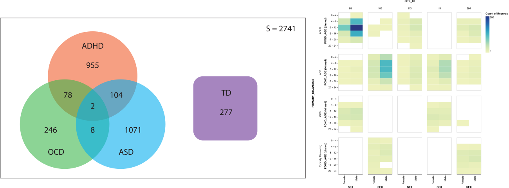Measures
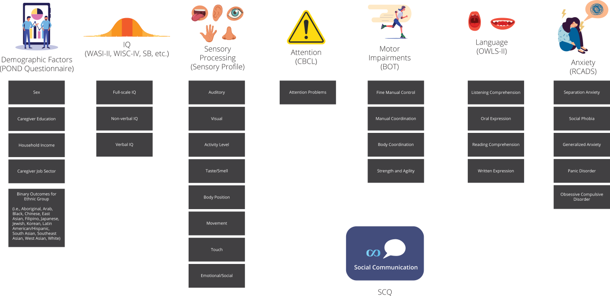Methods Overview
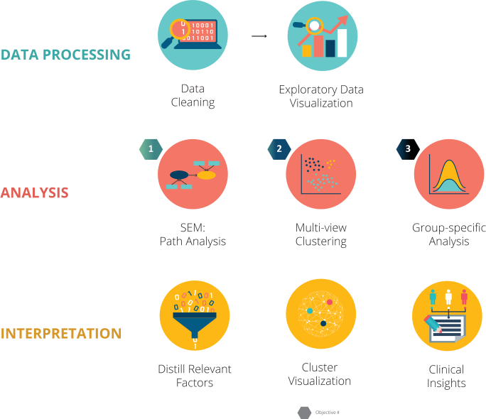Data Cleaning
Proper care to ensure the data is cleaned gives us greater confidence in the validity of our statistical results and models.
Removing Duplicate and Irrelevant Data
- Some participants completed certain measures more than once
- Most recent instance of a measure will be kept
Handling Missing Data Points
- Dropping participants with missing data + imputing data → not ideal
- To maintain the information about missingness, we will label missing categorical data with the new class of missing, and numeric data with a 0 or null value
Fixing Structural Errors
- Step is done con-currently with data visualization.
- Examples: pooling IQ information, calculating exact age based on SCQ date, separating diagnoses into binary variables
Removing Outliers
- Values outside of the valid range for a measure will be filtered out
- If values are abnormally high or low, but still in a valid/acceptable range, we will follow up with research staff.
Exploratory Data visualization
Since this proposed study involves high dimensional data and a large dataset, visualization of multidimensional data will be an important step in feature selection as well as the exploration and identification of clusters.
Altair
RnavGraph
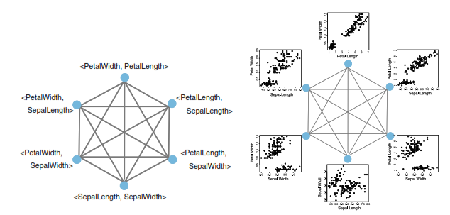Parallel Coordinates Graphs
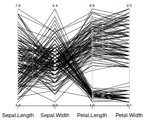Objective 1
To determine the differential contribution of demographics (sex, race/ethnicity, and socioeconomic status), IQ, sensory profiles, attention, anxiety, and language to social communication abilities.
Hypothesis
We hypothesize that each of these seven factors will directly contribute to social communication difficulties, albeit to different degrees. We also anticipate that some of these factors will operate through indirect effects as suggested in the literature.
Analysis
- Group SCQ items using Exploratory and Confirmatory Factor Analysis
- Model Generation using Path Model Analysis
Why Structural Equation Modelling (SEM)?
Since the relationship between our 7 factors and social communications seems complex, we require the use of more robust modelling techniques.
SEM refers to a group of statistical procedures (e.g., Factor Analysis, Path Analysis) that give us insight relating to causal inference.
SEM compared to Tradition GLM Approaches
↑ Flexibility
Theory-first Approach
Latent and Observed Variables
Factor Analysis to Identify Subdomains in SCQ
28 of the 40 questions on the Social Communication Questionnaire (SCQ) pertain to social communication. However, the SCQ lacks validated subdomains.
Confirmatory Factor Analysis (CFA)
There is a suggested mapping of SCQ questions to ADI domains: (1) Communication, (2) Social Reciprocal Interaction. We will validate this two-factor mapping using CFA
Exploratory Factor Analysis (EFA)
We will also use EFA to explore alternative groupings (more than 2 factors) of social communication skills. Have three or more subdomains allows for increased granularity in the path model analysis.
CFA Model of SCQ Items
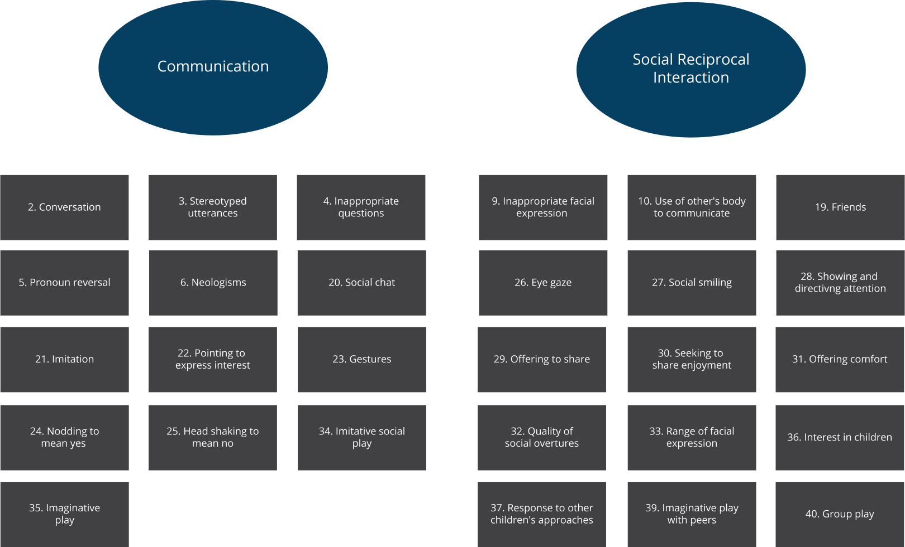Path Analysis
We will be using the iterative process of path analysis defined by Kline
We will be taking a model generation approach, where we start with a hypothesized model and iteratively make changes to discover a pathway that models the data well.
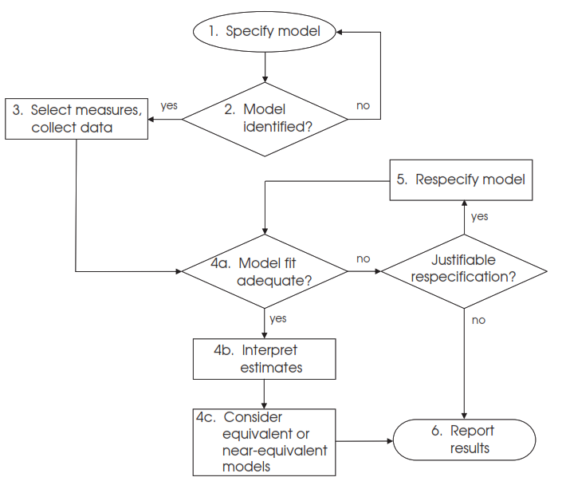1. Specify Path Model
2. Identify Model
We will be using OpenMX as our statistical package. We will be sure that the model is identified in the program
3. Select measures, collect data
4. Determine if model fit is adequate
As a industry standard, the following global fit statistics should be reported:
- Model chi- square with its degrees of freedom and p value
- Steiger– Lind Root Mean Square Error of Approximation (RMSEA; Steiger, 1990) and its 90% confidence interval
- Bentler Comparative Fit Index (CFI; Bentler, 1990)
- Standardized Root Mean Square Residual (SRMR)
The first method tests a exact-fit hypothesis — there is no differences between the covariances predicted by the model and the population covariance matrix.
Whereas, the other three models are approximate fit indices . There is no binary decision to accept or reject the null hypothesis. These statistics provide a continuous measure of "goodness-of-fit".
5.Respecify Model
There is an iterative process where the model is specified and incrementally improved
6. Report Results
Once we find a model that is (1) aligns with theory, (2) is parsimonious and (3) fits the data well, we can report our results.
Objective 2
To identify subgroups of individuals with different social communication profiles and to determine the predictors underlying each subgroup
Hypothesis
Although this objective is largely exploratory, we do have some expectations of what our cluster will look like. For example, based on the research about facial emotion regulation in ADHD, we might expect a subgroup of individuals who have attention issues and struggle with social skills relating to the facial expressions.
Analysis
- Feature distributed multiview spectral clustering will be used to identify subgroups of individuals
- Internal and external validation techniques to assess cluster valid
Why Feature-Distributed Multiview Spectral Clustering?
Clustering Methods:
- Distance-based clustering: K-Means, K-Mode, K-Medioids, Agglomerative, Divisive
- Density-based clustering: DSCAN, STING, Grid-based clsutering
- Probabilistic clustering: assumes data follows a specific distrivution and uses expectation maximization algorithm
- Dimension-reduction clustering: Probabilistic latent semantic indexing (PLSI), Nonnegative matrix factorization (NMF), Spectral Clustering
- Ensemble clustering: Base clusterings are grouping of a set of objects
that are then clustered using different clustering algorithms. These base clusters are
combined to form a consensus solution.
- Feature Distributed Clustering (FDC) uses base clusterings that use different subsets of features but the same data points
- Object Distributed Clustering (ODC) uses different subsets of data points but all the same features.
Clustering Plan
Given the high dimensionality of the data, the dimension reduction clustering techniques are necessary. The inclusion of multiview clustering, an ensemble techniques, will help us form more robust clusters.
Each of the 7 factors along with the item-level SCQ scores will form a base clustering, the data points will be kept consistent. The base clusterings will then be combined into ensemble clusters using a similarity algorithm.
Cluster Validation
A combination of internal and external validation measures will be used to assess the validity of the clusters..
Internal Validation
- Internal validations measures assess the compactness (i.e., how closely items in a cluster are related) and separation of clusters (i.e., how distinct or well-separated clusters are).
- Examples: Root-mean-square standard deviation (ratio of sum of squares between clusters and total sum of squares of dataset), silhouette index (the pairwise difference between-cluster and within-cluster differences) and clustering validation index (evaluates the intercluster separation using the Nearest Neighbours algorithm)116
External Validation
- Clustering analysis will be repeated using social problems subscale of the CBCL and the social function subscale ABAS. The agreement with clusters using the SCQ will be measured.
- We will also explore differences in measures of brain structure, connectivity, and function for these subgroups. If there is an underlying connection between the brain data and our clusters, we can have more confidence in our results.
- We could also replicate the clustering in another dataset.
Objective 3
To determine whether the determinants of social communication differ across diagnoses (ASD, ADHD, OCD) and typical development (TD)
Hypothesis
We anticipate that the ASD-specific and ADHD-specific path model and cluster analyses will largely look the same. The overlap and co-occurring diagnoses between ASD and ADHD is well-documented. ASD and ADHD also account for a large portion of pooled sample size that the models were trained for objective one and two.
We expect more pronounced differences with the OCD group since the incidence of co-occurrence is much lower.
For the TD group, we expect that there will be difficulty discovering a path model with high fit and discovering distinct clusters for the as this group rarely exhibits social communication difficulties.
Analysis
- We will re-run the SEM and clustering analyses on data separated and pooled by the diagnostic group to determine if our models and clusters hold.